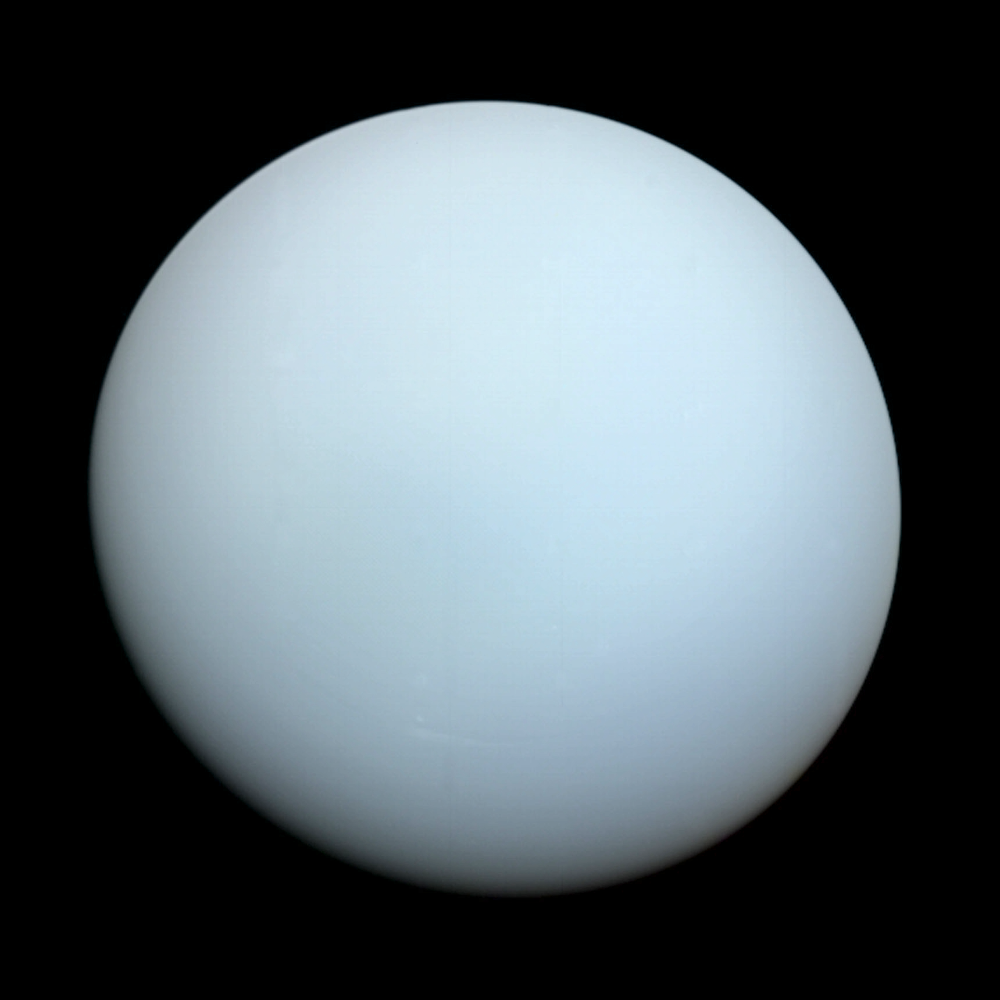

MERCURY
- Closest planet to the sun
- Small dry planet
- Covered with many craters
The planets Mercury, Venus, Earth, and Mars, are called terrestrial because they have a compact, rocky surface like Earth's terra firma. The terrestrial planets are the four innermost planets in the solar system.
.webp)


The outer planets are gas giants Jupiter and Saturn and ice giants Uranus and Neptune. Beyond Neptune, a newer class of smaller worlds called dwarf planets reign, including longtime favorite Pluto.
| PLANET | THUMBNAIL | DESCRIPTION |
|---|---|---|
| Jupiter |

|
The fifth planet from the sun. Jupiter is the biggest planet in the solar system. Jupiter is made up of gases. The big red spot on Jupiter is a giant storm. |
| Saturn |

|
The sixth planet from the sun. Saturn has big rings around it. The rings are made of rock and ice. Three of Saturn's rings can be seen from Earth. |
| Uranus |  | The seventh planet from the sun. Uranus is the only planet to spin round on its side. It would take you eight and a half years to reach Uranus in a space rocket. |
| Neptune |

|
The eighth planet from the sun. Neptune has four rings and eleven moons around it. Space rocket can't land on Neptune because Neptune is made of gas. |